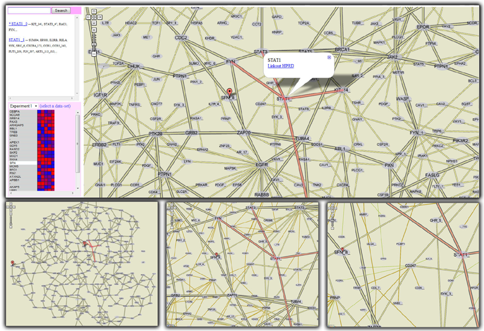

|
As part of our efforts to distribute visualizations of large scientific datasets using Google Maps, we facilitated the analysis of quantitative proteomic data in the context of prerendered protein interaction networks. Drawing protein interaction networks as prerendered maps is challenging due to clutter and related data not being necessarily co-located: because of long edges, zooming may not define a useful data query. To overcome these challenges, we use vertex splitting (creating multiple copies of the same protein) and zooming to filter out proteins based on a protein importance measure (showing only important proteins at zoomed-out levels). The top panel shows an overview of the analysis setup. Time-course proteomic data is displayed on the lower left. The experimental protein selected in the list is highlighted on the map. A second protein was selected on the map and has its interactors and meta-information displayed. All instances of this protein are listed on the upper left, together with their interactors. Three additional zoom levels are shown on the lower row; as zoom level increases, less relevant proteins are added to the display. |